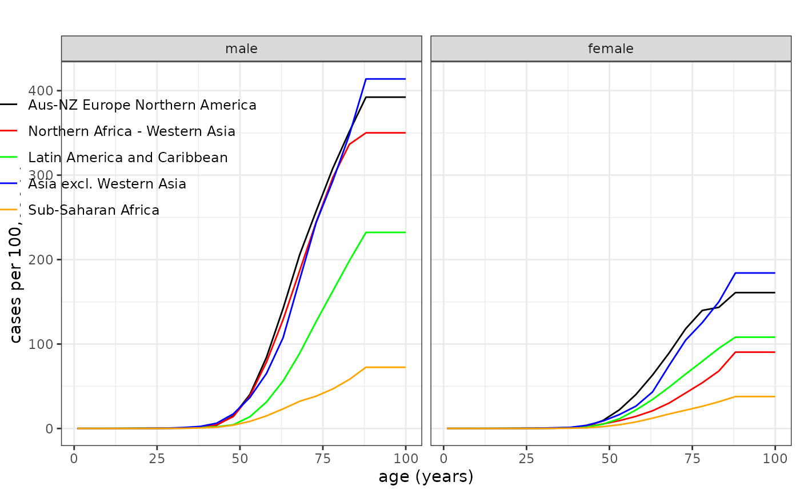
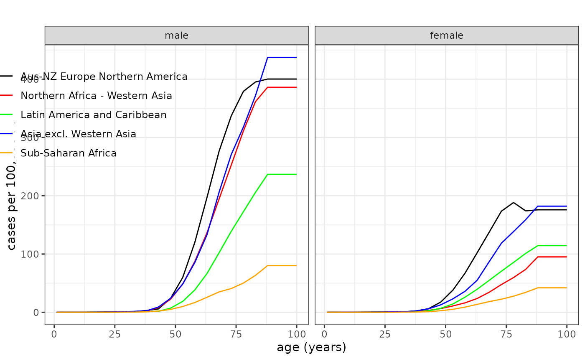

Using/Specifying Reference Data
CanEpiRisk_ReferenceData.RmdOverview
Reference baseline information for cancer mortality or incidence
rates may use a predefined list object for WHO global regions for cancer
motality rates (Mortality) or cancer incidence rates
(Incidence). Otherwise, the user can specify any reference
baseline information by a list object with a defined format.
Mortality
Mortality is a list object containing mortality rate
reference data for five WHO global regions:
- Australia–New Zealand & Europe & Northern America
- Northern Africa & Western Asia
- Latin America & the Caribbean
- Asia (excluding Western Asia)
- Sub-Saharan Africa
Each regional list contains 18 site-specific cancer mortality
datasets, provided as data.frame objects for the following cancer sites:
esophagus, stomach, colon,
liver, pancreas, lung,
breast, prostate, bladder,
brainCNS, thyroid, all_leukaemia,
all_cancer, allsolid-NMSC,
allsolid, leukaemia, allcause,
and survival.
Each region- and site-specific data.frame contains three rows:
-
age– age (in years), -
male– age-specific mortality rate for males, -
female– age-specific mortality rate for females.
These age-specific mortality rates are provided in one-year age intervals (from 1 to 100 years) and were linearly interpolated from the corresponding 5-year interval rates.
names(Mortality) # WHO global regions
#> [1] "Aus-NZ Europe Northern America" "Northern Africa - Western Asia"
#> [3] "Latin America and Caribbean" "Asia excl. Western Asia"
#> [5] "Sub-Saharan Africa"
names(Mortality[[1]]) # Sites for which baseline mortality rates are available
#> [1] "esophagus" "stomach" "colon" "liver"
#> [5] "pancreas" "lung" "breast" "prostate"
#> [9] "bladder" "brainCNS" "thyroid" "all_leukaemia"
#> [13] "all_cancer" "allsolid-NMSC" "allsolid" "leukaemia"
#> [17] "allcause" "survival"
# All solid cancer mortality rates for Region-1
head(Mortality[[1]]$allsolid)
#> age male female
#> 1 1 3.993729e-06 3.302123e-06
#> 2 2 1.198119e-05 9.906370e-06
#> 3 3 1.996865e-05 1.651062e-05
#> 4 4 1.946148e-05 1.625391e-05
#> 5 5 1.895432e-05 1.599719e-05
#> 6 6 1.844715e-05 1.574048e-05
tail(Mortality[[1]]$allsolid)
#> age male female
#> 95 95 0.02189662 0.01180741
#> 96 96 0.02189662 0.01180741
#> 97 97 0.02189662 0.01180741
#> 98 98 0.02189662 0.01180741
#> 99 99 0.02189662 0.01180741
#> 100 100 0.02189662 0.01180741
# Leukaemia mortality rates for Region-3
head(Mortality[[3]]$leukaemia)
#> age male female
#> 1 1 4.066002e-06 3.390723e-06
#> 2 2 1.219801e-05 1.017217e-05
#> 3 3 2.033001e-05 1.695362e-05
#> 4 4 2.103463e-05 1.704913e-05
#> 5 5 2.173925e-05 1.714464e-05
#> 6 6 2.244387e-05 1.724015e-05
tail(Mortality[[3]]$leukaemia)
#> age male female
#> 95 95 0.0004455293 0.0002765286
#> 96 96 0.0004455293 0.0002765286
#> 97 97 0.0004455293 0.0002765286
#> 98 98 0.0004455293 0.0002765286
#> 99 99 0.0004455293 0.0002765286
#> 100 100 0.0004455293 0.0002765286
# All-cause mortality rates for Region-5
head(Mortality[[5]]$allcause)
#> age male female male_py female_py
#> 1 1 0.056160846 0.048467260 18761.24 18253.13
#> 2 2 0.009220674 0.007515785 18127.85 17684.38
#> 3 3 0.007183781 0.006129537 17634.31 17232.95
#> 4 4 0.005848985 0.005303171 17194.27 16823.33
#> 5 5 0.004864717 0.004698722 16794.60 16448.30
#> 6 6 0.004105606 0.004193329 16422.67 16095.09
tail(Mortality[[5]]$allcause)
#> age male female male_py female_py
#> 95 95 0.3576011 0.2754637 9.8210 23.4550
#> 96 96 0.3680964 0.2902003 6.9710 16.8780
#> 97 97 0.3780983 0.3040167 4.9220 11.9500
#> 98 98 0.3884477 0.3176900 3.4625 8.3635
#> 99 99 0.3989252 0.3305587 2.4190 5.8265
#> 100 100 0.4149599 0.3458980 1.6845 4.0590Baseline rates may be plotted using plot_refdata().
# Plotting lung cancer mortality rates
plot_refdata( dat=Mortality, outcome="lung", leg_pos=c(0.27,0.95) )
Incidence
Incidence is a list object containing mortality rate
reference data for five WHO global regions:
- Australia–New Zealand & Europe & Northern America
- Northern Africa & Western Asia
- Latin America & the Caribbean
- Asia (excluding Western Asia)
- Sub-Saharan Africa
The list object for each region contains data.frames objects for the
16 site-specific cancer incidence risk models derived from Life Span
Study (esophagus, stomach, colon,
liver, pancreas, lung,
breast, prostate, bladder,
brainCNS, thyroid, all_leukaemia,
all_cancer, allsolid-NMSC,
allsolid, leukaemia).
Each region- and site-specific data.frame contains three rows:
-
age– age (in years), -
male– age-specific incidence rate for males, -
female– age-specific incidence rate for females.
These age-specific incidence rates are provided in one-year age intervals (from 1 to 100 years) and were linearly interpolated from the corresponding 5-year interval rates.
names(Incidence) # WHO global regions
#> [1] "Aus-NZ Europe Northern America" "Northern Africa - Western Asia"
#> [3] "Latin America and Caribbean" "Asia excl. Western Asia"
#> [5] "Sub-Saharan Africa"
names(Incidence[[1]]) # Sites for which baseline incidence rates are available
#> [1] "esophagus" "stomach" "colon" "liver"
#> [5] "pancreas" "lung" "breast" "prostate"
#> [9] "bladder" "brainCNS" "thyroid" "all_leukaemia"
#> [13] "all_cancer" "allsolid-NMSC" "allsolid" "leukaemia"
# All solid cancer incidence rates for Region-1
head(Incidence[[1]]$allsolid)
#> age male female
#> 1 1 2.460574e-05 2.347254e-05
#> 2 2 7.381723e-05 7.041762e-05
#> 3 3 1.230287e-04 1.173627e-04
#> 4 4 1.131290e-04 1.083419e-04
#> 5 5 1.032292e-04 9.932113e-05
#> 6 6 9.332949e-05 9.030034e-05
tail(Incidence[[1]]$allsolid)
#> age male female
#> 95 95 0.03803944 0.02027876
#> 96 96 0.03803944 0.02027876
#> 97 97 0.03803944 0.02027876
#> 98 98 0.03803944 0.02027876
#> 99 99 0.03803944 0.02027876
#> 100 100 0.03803944 0.02027876
# Leukaemia incidence rates for Region-3
head(Incidence[[3]]$leukaemia)
#> age male female
#> 1 1 1.340418e-05 1.151570e-05
#> 2 2 4.021253e-05 3.454710e-05
#> 3 3 6.702088e-05 5.757850e-05
#> 4 4 6.363679e-05 5.417608e-05
#> 5 5 6.025271e-05 5.077365e-05
#> 6 6 5.686862e-05 4.737123e-05
tail(Incidence[[3]]$leukaemia)
#> age male female
#> 95 95 0.0004737154 0.0002890933
#> 96 96 0.0004737154 0.0002890933
#> 97 97 0.0004737154 0.0002890933
#> 98 98 0.0004737154 0.0002890933
#> 99 99 0.0004737154 0.0002890933
#> 100 100 0.0004737154 0.0002890933
# All;-cause incidence rates for Region-5
head(Incidence[[5]]$allcause)
#> NULL
tail(Incidence[[5]]$allcause)
#> NULL
# plotting lung cancer incidence rates
plot_refdata( dat=Incidence, outcome="lung", leg_pos=c(0.27,0.95) )